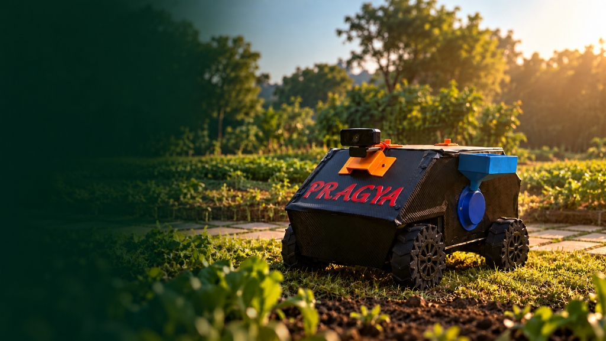

Soil moisture
—Optimal 45–65%
PRAGYA
Predictive Robotics for Agricultural Growth & Yield Analytics

PRAGYA
SMART FARMING, BUILT FOR THE FIELD.
Sense the field. Understand the crop. Act with confidence.
From soil sensing to field action.
01
Root-Depth Telemetry
Direct measurement of NPK, moisture, soil pH, and electrical conductivity without laboratory delays.
02
Multimodal Onboard Vision
Instant offline screening for foliar diseases and pests directly at the crop canopy.
03
Physical Field Action
Targeted dispensing nozzles and simulated robotics navigation for localized farm interventions.
FIELD INTELLIGENCE · HYDERABAD
PRAGYA Farm
Field Health
—
Healthy
Soil nutrients
Core macro-nutrients (NPK) from field sensors
N
Nitrogen
—
Pref: 50–85
P
Phosphorus
—
Pref: 20–50
K
Potassium
—
Pref: 30–45
EC
Electrical conductivity
0.62 mS/cm
Pref: < 1.0 mS/cm
Soil nutrient summary:
Analyzing nutrient balance…
Temperature
—Field sensorHumidity
—Checking conditionsSoil pH
—Optimal 6.0–7.0What needs attention?
Your field looks healthy
No major issues detected in the current readings.
Alerts
0
No active alerts
All monitored field indicators are in normal range.
Recommended Crops
Based on current field conditions
- Loading recommendations…
Use these rankings as a starting point alongside local agronomic advice.
Field tools
Soil & leaf
Turn sensor readings and one clear leaf photo into practical guidance.
Recommended Crops
Top 3- Loading recommendations…
Use these rankings as a starting point alongside local agronomic advice.
Disease detection
Pepper, potato, and tomato. One leaf, close up, in daylight.
Scan result
Intelligence that stays in the field.
PRAGYA EDGE AI
LOCAL PROCESSING
OFFLINE CAPABLE
ON-DEVICE MODELS
INPUT
Leaf Image
LOCAL MODEL
Edge Model
FIELD INSIGHT
Disease Insight
Run analysis
Disease Detection selected
Cloud AI • Online
Model result
HISTORY
Field intelligence history
0 analysesReview saved disease, pest, field, crop and soil analyses from this device.
0 Total
0 Pest
0 Disease
0 Field
0 Crop
Analysis records
No matching analysis records found.
FIELD INTELLIGENCE · ADVISORY
Ask PRAGYA
🌱
How can I help with your farm?
Ask about soil, crops, pests, diseases, or your field data.
Your field today
Soil moisture
—
Temperature
—
NPK
—
You could ask
ROVER
Field rover
Live camera
Rover navigation & field view
LIVE
Live camera feed
Camera stream will appear here
Resolution1080p
StreamPrimary
FPS30 fps
Latency< 45 ms
Movement controls
Drive the rover manually
Field actions
Control field mechanisms
NPK Sensor
Deploy / retract NPK sensor servo
Seeder
Seed dispensing mechanism
Pesticide Spray
Precision field spraying system
Prototype activity
Live command log and system status
No recent commands
Use the controls to preview the command log.
FIELD INTELLIGENCE
Field mapping
Field details
Configure spatial bounds and agronomic parameters
Field zones
Automatic equal-area spatial grid partitions
Field Map Workspace
Offline Vector Grid · Ready for Tile Provider
Satellite Tile Layer Ready
Connect your satellite or base tile provider URL in configuration to activate photorealistic imagery.
Field spatial summary
Authoritative Polygon
Area
5.00 acres
2.02 hectares
Perimeter
602.4 m
Boundary length
Dimensions
~200 × 101 m
~656 × 332 ft
Location
Hyderabad, Telangana
Spatial reference
Active Crop
Wheat
2 zones
Soil Nutrient Heatmap
Spatial Model EstimateSpatial estimate of nutrient distribution across the field
System
Device status
Connection, local models, and farm settings for setup and support.
Account
Signed outCreate an account to attach your scans and model runs to a name. The farm dashboard stays usable without signing in.
AI Engine
Choose how PRAGYA processes AI analysis.
Cloud AI: Uses the connected cloud AI/Gemini service and requires internet access.
Edge AI: Runs supported AI models locally on the device and does not require internet access.
Current engine: Cloud AI
Installed models
Local- Disease model
- —
- Last inference
- —
- Confidence
- —
- Cloud required
- —
Run models from the AI Models page.
Farm location
Used for live weather only when sensor GPS is unavailable.
Write access
If this device protects changes with an API token, enter it for this browser session.
Raw sensor dataExpand
Waiting for data…